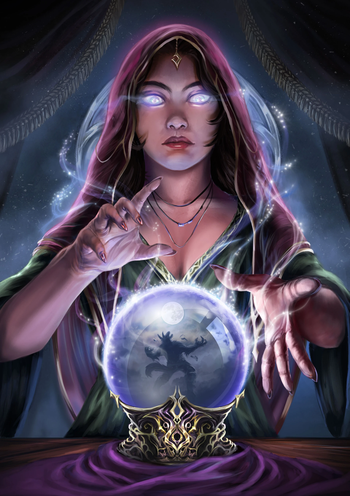

Here in this fortune teller it will help you remember what you experience before or had a dream that made you remember and already experience this in real life.
Dream Catchers
Here in this dream catcher, you can actually capture dreams and help you remember what you experience about in your dreams. Whether it's from childhood, adult life, family or something more eerie.